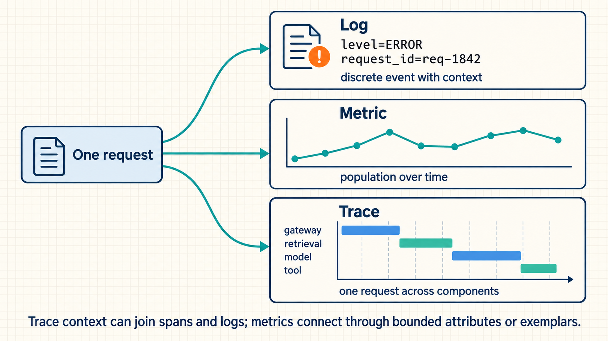
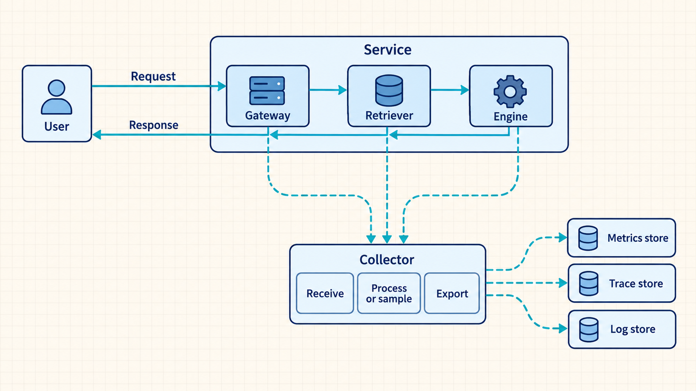
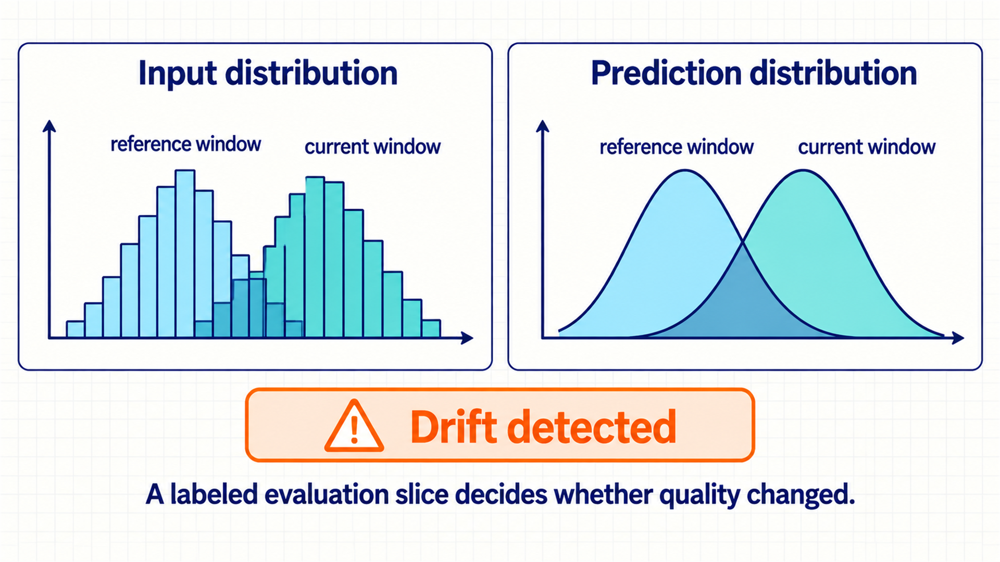
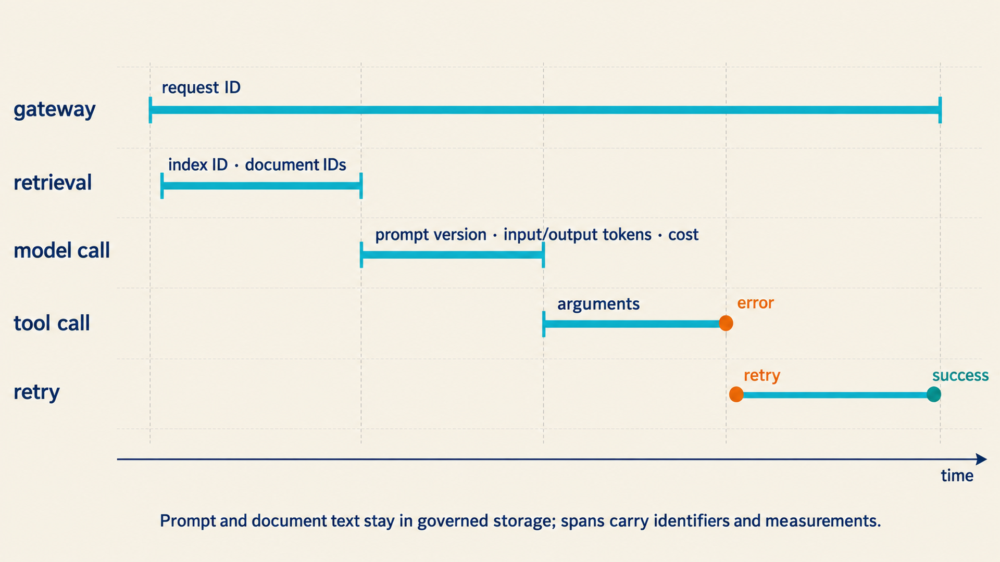

6 Tracing service behavior and detecting change
A grounded-answer service can return HTTP status 200 and still tell an employee the wrong remote-work rule. Serving measurements and retrieved passages alone do not explain which operations produced that answer or whether the questions users ask have changed.
Request traces connect work across components, while aggregate measurements reveal changes across requests. These records guide investigation. Deciding whether answer quality has changed also needs evaluation evidence, developed in Chapter 7.
Chapter map: request records and change signals
- 6.1: How do logs, metrics, and traces connect one request to work across components?
- 6.2: Which changes in inputs and predictions need investigation, and what evidence is still needed to establish quality loss?
- 6.3: What must a trace retain for a retrieval-and-generation request or a multi-step agent run?
6.1 Request telemetry with OpenTelemetry
Serving one grounded answer requires work across the gateway, router, retriever, engine and storage components. Investigating a failed request needs records of those operations alongside aggregate measurements. Logs, metrics and traces carry complementary evidence through a vendor-neutral telemetry path.
Log: A discrete event record with time, severity, message, and structured context.
Metric: A numeric measurement recorded over time, such as a request counter, p95 latency calculated from request durations, or the current number of free KV blocks.
Span: A record of one operation, with start and end times and associated details, such as a retrieval query or a model call.
Trace: Related spans linked by propagated context to describe work across components. Their timing and parent-child links help investigate a request but do not by themselves prove the cause of a failure.
Metrics summarize a population, traces show where one request spent time, and logs preserve detailed events. Propagated trace context connects spans and can be recorded in logs. Aggregate metrics use a limited set of labels, such as model version, so requests share time series. When configured, an exemplar links a selected metric observation to a trace.1 Request-level trace or log records identify the prompt length, selected replica, cache hit or engine error for an affected request.

- OpenTelemetry (OTel): An observability project that provides standard ways for applications to record and exchange traces, metrics, and logs. Component stability is version-specific.2
- OpenTelemetry Collector: A vendor-neutral service that receives telemetry, processes or samples it, and exports it to storage backends.3

The fragment assumes that the application has configured metric and trace providers, service identity, telemetry processors and an exporter before the endpoint starts. Providers supply the recording objects, processors prepare the records, and the exporter sends them to a collector or telemetry storage service. A complete implementation also records exceptions, sets span status and extracts inbound trace context so the span remains a child of the gateway request. The listing shows the success path. The application supplies those error and propagation paths.
Code example: Endpoint sketch with one span and model-version metrics. Limit the number of version-label values. Provider setup, context extraction and error handling belong to the application.
import time
from fastapi import FastAPI
from opentelemetry import metrics, trace
app = FastAPI()
meter = metrics.get_meter("prediction-service")
tracer = trace.get_tracer("prediction-service")
latency_ms = meter.create_histogram("prediction.latency_ms")
requests = meter.create_counter("prediction.requests")
@app.post("/predict")
async def predict(features: dict):
started = time.perf_counter()
with tracer.start_as_current_span("model.predict") as span:
span.set_attribute("model.version", MODEL_VERSION)
prediction = model.predict(features)
requests.add(1, {"model.version": MODEL_VERSION})
latency_ms.record((time.perf_counter() - started) * 1000)
return {"prediction": prediction}Code walkthrough: OpenTelemetry span instrumentation
Instrumenting a request handler records a model-call span and handler-level metrics:
- Instrumentation objects: The meter creates fleet-level counter and latency series. The tracer records the individual prediction call.
- Request scope:
start_as_current_spanmakes the prediction call the active span so downstream instrumented calls can inherit its trace context. - Version join: The custom application attribute
model.versionrecords the deployed identity in both the trace and request counter.4 Limit its distinct values to the model versions being measured. - Measured span: The span encloses only
model.predict. The timer runs from handler entry through the request-counter update. It does not include framework response serialization or network time. A request-level parent span would be needed to place retrieval and serialization spans under one request trace. - Result: The same request contributes to aggregate health measurements and retains a trace path for case-level diagnosis.
- Limits: Each distinct metric-label combination creates a time series. This count is its cardinality. Raw prompts and user IDs can create too many series and expose sensitive data.5 Request-level payloads belong in access-controlled traces or logs with a retention policy.
Example: telemetry infrastructure scale
Telemetry storage and processing capacity depend on cluster size and request volume:
- A small cluster may run metric, log and trace stores with a shared dashboard on a few nodes.
- Large GPU fleets generate enough telemetry to require sharding, retention design, sampling, high-performance stores, or a managed service. Observability has its own capacity plan.
6.2 Detecting data and prediction drift
Service telemetry reveals availability and performance. A model can return fast 200 responses while input data or output behavior moves away from the evaluated distribution. Data drift, prediction drift, delayed outcomes, and actual quality degradation are distinct conditions.
Data drift: A change in the distribution or schema of model inputs relative to a reference population.
Prediction drift: A change in the distribution of model outputs relative to a reference population.
Concept drift: A change in the relationship between inputs and the target outcome. Whether it reduces a model’s accuracy must be measured.6

Drift is evidence of change, not proof of reduced quality.7 A new language distribution may be expected after a regional launch, and a stable prediction distribution can still hide failure on one subgroup. Ground truth often arrives late: reviewer labels and user-reported errors for a grounded-answer service may arrive days later, and outcomes in domains such as credit or churn can take months. Production monitoring needs both indirect signals and delayed label joins.
For an LLM service the inputs are text, so drift signals summarize text and retrieval behavior rather than fixed feature columns. Useful signals include prompt length, language mix, the topic mix estimated by grouping similar question embeddings (Section 5.2), the retrieval score of the best chunk, the share of questions with no chunk above a relevance threshold, answer length, and refusal rate. A rise in questions without a good chunk directs investigation to corpus coverage and the retrieval path. Check ingestion and chunking, encoder/index compatibility, search and permission filtering before attributing misses to missing corpus evidence or the generator.
Each prediction record retains the fields needed for analysis, with access controls and retention limits:
- Input features: raw or privacy-safe derived attributes needed for later slice analysis.
- Output: score, class, generated answer, or tool decision.
- Model and feature versions: identities needed to reproduce the prediction.
- Request metadata: time, latency, endpoint, region, and trace identifier.
- Outcome join key: an access-controlled identifier that can attach delayed ground truth without exposing it broadly.
Reference windows, alert thresholds, seasonality, missing-value rates, text length, language mix, and output histograms are defined per feature or slice. An alert leads to investigation and, when appropriate, evaluation on captured cases.
Note
Example: language-mix distribution shift
This example uses a chosen threshold to detect a language-mix change. Statistical performance and warning lead time need separate measurement:
- Reference window: Four stable weeks contain 10% Spanish-language requests, with ordinary daily variation between 8% and 12%.
- Current window: The latest complete day contains 35% Spanish-language requests after a regional product launch.
- Change signal: The increase is 25 percentage points above the 10% reference mean and 23 points above the 12% upper historical value. The example assumes an alert threshold chosen from those windows.
- Confounder check: Release records confirm the launch, and request volume is large enough that the shift is not a small-sample effect.
- Quality decision: A Spanish evaluation slice and delayed outcome join determine whether quality changed, the distribution alert alone does not trigger retraining.
- Conclusion: Drift detection identifies a population change, while labeled or calibrated evaluation evidence determines its effect on quality.
6.3 Tracing multi-step AI requests
Drift monitoring summarizes populations. Diagnosing one bad answer needs its request path: retrieval adds prompts, candidate chunks and reranking, while an agent adds tool calls, retries and branches whose outputs may vary between runs. The trace records those operations under stated privacy, cost and replay controls.
- Agent: An application in which a model repeatedly chooses the next action, such as requesting a search or database tool. The application checks the request, may execute it, and returns the result to the model until it produces a final answer.
An AI trace records which model or provider handled each call, prompt or template version, sampling parameters, input and output token counts, retrieved context identifiers, tool inputs and outputs, errors, latency, and cost. The trace connects a final response to the decisions that produced it.8

A gateway such as LiteLLM can centralize provider routing and cost records.9 MLflow offers trace capture and visualization.10 The application needs a searchable, versioned record of the request’s actions and protected storage for captured payloads.
| Span | Minimum attributes | Question answered |
|---|---|---|
| LLM call | Model, prompt version, tokens, latency, cost, response status | Which generation produced this text and at what cost? |
| Retrieval | Query, embedding and index versions, filters, ordered chunk IDs, source versions and locations, branch ranks and scores | Which candidates did retrieval return? |
| Prompt assembly | Template version, ordered retained source IDs and versions, final prompt hash or manifest ID, truncation and permission-check results | Which evidence and instructions reached the model? |
| Tool call | Tool version, arguments hash, result status, duration | What external action or observation changed the trajectory? |
| Decision/branch | Rule or node identity, selected path | Which recorded rule or branch led to the next step? |
| Evaluation | Evaluator version, case ID, raw verdict and rationale | How was quality judged and can it be replayed? |
Span trace: locating a failed operation
Tracing distributed span relationships links a request to the operation that recorded an error:
- Trace
7f2…begins with gateway span01, router span02selects serving bundlesb-27, retrieval span03records embeddingemb-9, indexidx-14, and ordered chunk IDs with source versions, model span04records promptp-31and a timeout, retry span05succeeds on the same bundle. - The error on span
04remains visible even though the parent request succeeds. This timing and error evidence locates the failed operation but does not by itself prove the underlying cause. The intended tail-sampling policy retains error traces and a governed sample of successful requests, provided complete traces arrive and collection capacity is sufficient. Prompt text stays in protected payload storage, while ordinary span attributes carry identifiers and limited measurements.
Chapter 6 summary
Logs preserve events, metrics summarize requests, and traces connect recorded operations through shared context. Drift signals show changes in inputs or predictions, but quality loss needs separate evidence. Request payloads and source identities remain subject to access and retention rules.
Chapter 6 mastery check
- Can a request’s logs, metrics, and spans be connected without placing user identifiers in metric labels?
- Can a drift alert be separated from confirmed quality loss and connected to delayed outcomes?
- Can the retained trace identify the request’s model calls, source passages, and tool actions within the access and retention rules?
Chapter checkpoint
Review Questions 29, 30, and 33 in Appendix B, Section B.1, to check the difference between service availability and answer quality, the roles of telemetry signals, and trace-data controls.
Carry-forward result
A request can now be connected to its recorded operations and release identities, and a change in the request population can be investigated. Chapter 7 uses this evidence alongside recorded experiments to assess quality and compare candidate changes.
OpenTelemetry Authors. (n.d.). Metrics data model: Exemplars (OpenTelemetry specification, stable section). Retrieved October 16, 2026, from https://opentelemetry.io/docs/specs/otel/metrics/data-model/#exemplars. Exemplars associate metric observations with context, including optional trace and span IDs. World Wide Web Consortium. (2021, November 23). Trace context (W3C Recommendation). https://www.w3.org/TR/trace-context/. W3C specifies propagated trace identity.↩︎
OpenTelemetry authors. (n.d.). OpenTelemetry specification: Overview. https://opentelemetry.io/docs/specs/otel/overview/. The OpenTelemetry overview distinguishes APIs, SDKs, signals and protocol specifications.↩︎
OpenTelemetry authors. (n.d.). Collector. https://opentelemetry.io/docs/collector/. Collector pipelines use receivers, processors and exporters. Sampling depends on the configured components and collection capacity.↩︎
OpenTelemetry authors. (n.d.). Instrumentation. https://opentelemetry.io/docs/languages/python/instrumentation/. The Python guide supports spans, context and metric attributes.↩︎
Prometheus authors. (n.d.). Metric and label naming. https://prometheus.io/docs/practices/naming/. Prometheus warns that each label combination creates a series and discourages unbounded user identifiers. Privacy risk separately depends on payload and access policy.↩︎
Widmer, G., & Kubat, M. (1996). Learning in the presence of concept drift and hidden contexts. Machine Learning, 23(1), 69–101. DOI:
10.1007/BF00116900. https://link.springer.com/article/10.1007/BF00116900. The concept-drift paper describes changed target concepts.↩︎Rabanser, S., Günnemann, S., & Lipton, Z. C. (2019). Failing loudly: An empirical study of methods for detecting dataset shift (arXiv:1810.11953). arXiv. Author manuscript. Failing Loudly separates shift detection from harmful change in its tested datasets and perturbations.↩︎
OpenTelemetry authors. (2026, September 16). Semantic conventions for generative client AI spans (Development status, commit be23fcc250f72e6f740c96d05fa6f12fbee3d71a). https://github.com/open-telemetry/semantic-conventions-genai/blob/be23fcc250f72e6f740c96d05fa6f12fbee3d71a/docs/gen-ai/gen-ai-spans.md. The GenAI conventions describe operation spans and selected inference/retrieval fields, with Development status. Template versions, costs, release joins and payload retention can require application extensions.↩︎
LiteLLM project. (n.d.). CLI: Quick start. https://docs.litellm.ai/docs/proxy/quick_start. The proxy guide describes centralized routing and management.↩︎
MLflow project. (n.d.). LLM tracing and agent observability. https://mlflow.org/docs/latest/genai/tracing/. MLflow documents tracing and visualization. Actual coverage depends on instrumentation, enabled integrations, and retained payloads.↩︎